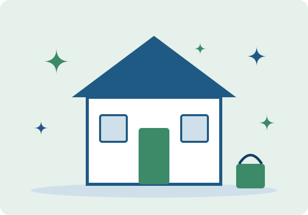

Nueva cuadrilla en la zona este
Publicado el
Desde noviembre llegamos a Boca Chica y San Isidro. Por lanzamiento, la limpieza básica pasa de $55 $45 durante todo el mes.
Promoción válida hasta el 30 de noviembre de 2026.
Cuadrillas uniformadas y productos seguros llegan a tu puerta. Reserva hoy y recibe tu hogar como nuevo.

Brisa Limpia es una empresa familiar fundada en 2019 que limpia hogares y oficinas pequeñas en Santo Domingo. Usamos productos sin COV y capacitamos a cada persona de la cuadrilla.
Atendemos más de 1,200 hogares y cubrimos viviendas de hasta 250 m2. Nuestro lema: Se nota cuando entramos, no cuando salimos.
Llegaron puntuales, trajeron todo y dejaron la cocina impecable en tres horas.
— Marta Rivas, clienta de Los Prados
Limpieza básica y profunda de cocina, baños y habitaciones.
Espacios de trabajo listos antes de que abra tu equipo.
Mudanzas, post-obra y alfombras con equipo especializado.
Publicado el
Desde noviembre llegamos a Boca Chica y San Isidro. Por lanzamiento, la limpieza básica pasa de $55 $45 durante todo el mes.
Promoción válida hasta el 30 de noviembre de 2026.
No es obligatorio. Puedes dejarnos acceso con un portero o un familiar.
Sí, traemos productos, aspiradora y paños de microfibra. Tú no pones nada.